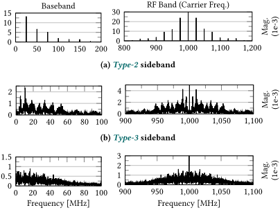
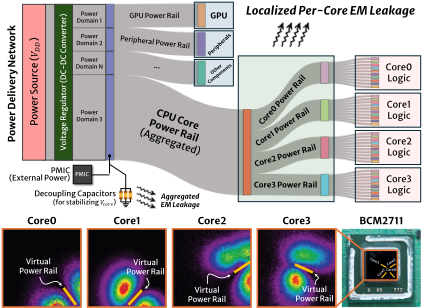
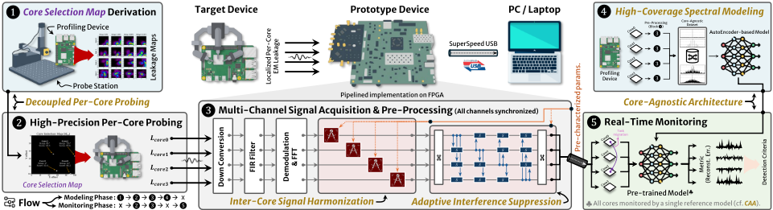
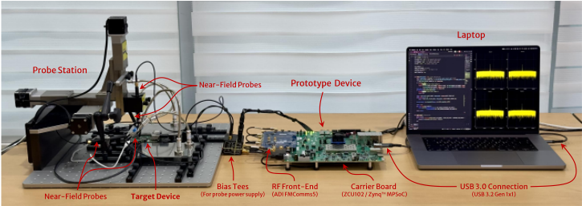
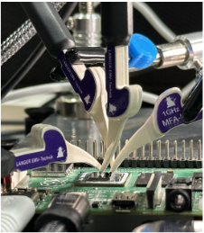
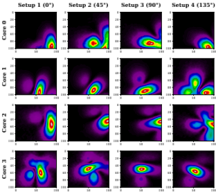
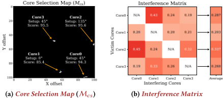
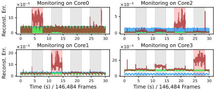
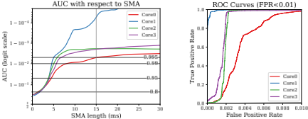

利用每核泄漏：多核架构的电磁侧信道监测
该论文针对多核处理器物理侧信道分析长期滞后的安全空白：核间信号干扰、信号异构性与调度导致的动态核分配，使外部 EM 监测难以获得可用泄漏。作者从片上供电网络的幅度调制机理出发解释边带成因，归纳 Type-1 至 Type-4 四类原子频谱模式，并首次实现多核架构的 per-core 泄漏利用。方法上提出 DPP（派生 Core Selection Map 定位各核干扰最小的探测点）、ICSH（对齐通道增益与噪声基线）、AIS（基于 Interference Matrix 逐帧在线抑制邻核干扰），并用无监督 vanilla autoencoder 对 FFT 帧做异常检测，配合 Core-Agnostic 单模型架构消除任务迁移影响。原型基于 AMD ZCU102 与 FMComms5 四通道 RF 前端，在 Raspberry Pi 4B（四核 ARM Cortex-A72，固定 600 MHz）上验证，SMA=15 ms 下所有核监测 AUC 均高于 0.995。该工作属硬件安全/侧信道监测方向，与团队 IP 设计与验证能力域无直接交集。
多核架构的物理侧信道分析严重滞后，形成关键安全空白：核间信号干扰、信号异构性、以及 CPU 调度策略与核亲和配置导致的动态核分配，使外部观测难以获得可用的 EM 泄漏；此前唯一针对多核侧信道监测的工作（Yilmaz et al.）依赖聚合 EM 泄漏，导致高复杂度与不现实假设。论文目标是揭示多核架构的 EM 泄漏机制，首次实现 per-core 泄漏利用，并给出非侵入式、核级粒度的侧信道监测方法。
首先从机理入手：CPU 核在时钟上升沿的开关电流在片上供电网络/电源轨附近产生 EM 载波，指令级活动对载波做幅度调制形成边带，边带图案等效于核功耗的频移 Fourier 表示；据此归纳 Type-1（idle/门控）、Type-2（严格周期）、Type-3（抖动周期）、Type-4（不规则）四类原子频谱模式。监测方法包括：(1) DPP——通过改变线圈角度采集多张泄漏图，用 Algorithm 1 派生 Core Selection Map，为每个核选定邻核干扰最小的探测位置与条件（每类芯片仅需派生一次）；(2) ICSH——用 gadget 人工生成 Type-2 参考边带，对齐各通道增益与噪声基线；(3) AIS——用 Algorithm 3 构建 Interference Matrix，按受扰最小的核序逐帧在线抑制邻核干扰；(4) 用无监督 vanilla autoencoder 对 FFT 帧做重构误差异常检测（signal-centric，不依赖状态信息等中间抽象）；(5) Core-Agnostic 架构——单一参考模型覆盖任意核数，使任务分配与迁移不影响监测。原型在 ZCU102 FPGA 上以流水线方式实现核心逻辑，Cortex-A53 裸机固件负责 RF 收发控制与 USB 3.2 高带宽传输。
在 Raspberry Pi 4B（BCM2711，四核 ARM Cortex-A72，固定 600 MHz、无 DVFS）上，4 核 × 4 种探测配置共采集 16 张核级泄漏图，耗时约 10 小时；Algorithm 1 派生 Core Selection Map 约 15 分钟（空间粒度 101×101）
并行运行 MLP 推理、AES 加密、basicmath、susan（MiBench）四类良性任务并依次向 Core0–Core3 注入异常行为（PoC：运行 find）时，SMA=15 ms 下所有核的监测 AUC 均高于 0.995
原型设备实现多通道完美同步采集：ZCU102（Zynq UltraScale+ MPSoC）+ FMComms5 四通道 RF 前端，采样率 10 MS/s、中心频率设为时钟频率，USB 3.2 Gen 1x1 最高 5 Gbps
频谱建模采用 2048-700-300-700-2048 的 autoencoder，对约 0.2 ms 的 FFT 帧做重构误差异常检测；探测使用 Langer MFA-R 0.2-6 与 MFA-R 0.2-75（Δ=300 μm）近场探头，泄漏图由 Riscure probe station 采集
据论文所述，这是首个揭示多核架构 EM 泄漏机制并实现 per-core 泄漏利用的工作。与先前唯一的多核侧信道监测研究依赖聚合泄漏不同，本文采用细粒度 multi-probing 直接在单个核附近测量非聚合泄漏，并以 Core Selection Map、ICSH、AIS 与 Core-Agnostic 架构系统性解决核间干扰、信号异构与动态核分配三大挑战；频谱建模采用 signal-centric 方法，避免先前工作依赖状态信息等中间抽象；同时给出 Type-1 至 Type-4 的边带形态分类与基于幅度调制机理的边带成因解释。
相关度级别：low
命中能力域：无明显对应
理由：论文属于硬件安全/电磁侧信道监测方向，核心贡献是揭示多核架构 EM 泄漏机制并实现 per-core 泄漏利用与运行时异常监测，不涉及内存/互连 IP 的架构定义、RTL 实现与验证交付，与 2.1–2.7 七个能力域均无实质技术交集；上游 catalog 标签'无明显对应'与正文内容一致。仅有的间接接触点——片上供电网络 EM 泄漏的空间局域性分析、基于 ZCU102 的 FPGA 实时流水线仪器化平台、autoencoder 异常检测——分别属于芯片安全评估、测量仪器实现与通用异常检测方法，不构成对团队能力域的直接命中。
建议动作：暂不相关
arXiv:2608.28412v1 [cs.CR] 2026年8月28日
高丽大学 韩国首尔 dh_bae@korea.ac.kr
高丽大学 韩国首尔 lemontrees33@korea.ac.kr
高丽大学 韩国首尔 islee94@korea.ac.kr
国防发展局 韩国首尔 n0fate@add.re.kr
YM-NaeulTech 韩国仁川 youngq.jung@ym-naeultech.com
高丽大学 韩国世宗 80khs@korea.ac.kr SmartM2M 韩国釜山 shhong@smartm2m.co.kr
侧信道监测作为一种有前景的安全方法近来受到广泛关注，它可以从嵌入式系统外部观测功耗或电磁（EM）信号，而在这类系统中，设备端安全方案本身就难以部署 [11, 20]。尽管多核架构在嵌入式系统中被日益广泛地采用以满足更高的性能需求，但针对此类平台的研究仍然有限，留下了一个关键的安全空白。虽然有人认为多核系统表面上可以承载安全方案，但出于以下原因，此类系统中的侧信道监测仍然既必要又有益：
已有方法及其局限。仅有少数研究明确探讨了多核系统中的物理侧信道 [29, 30, 39]，其中不包括超出本研究范围的微架构或缓存层面的工作 [18, 25, 26, 31]。Yilmaz 等人率先探索了多核系统上的侧信道监测，其研究至今仍是该领域唯一的工作 [39]。然而，他们的方法依赖于聚合的电磁泄漏——在未考虑多核架构中泄漏机制的情况下进行观测——从而导致高复杂度和不切实际的假设。Navanesan 等人研究了利用多核系统中粗粒度电磁泄漏进行取证的方法，但其研究仅限于处于不同时钟域的核 [30]。Masti 等人研究了核间热隐蔽信道，这与我们的工作没有直接关联 [29]。
多核处理器正日益广泛地被嵌入式系统采用，以满足不断增长的性能需求。然而，由于获取可用的泄漏本质上极具挑战性，针对多核体系结构的物理侧信道分析仍未得到充分探索。因此，针对此类系统的侧信道安全研究已远远落后，留下了一个关键的安全空白。为填补这一空白，我们揭示了多核体系结构中的电磁泄漏机制，并首次演示了每核泄漏的利用，从而使针对这些系统的物理侧信道分析成为可能。作为一项实用的扩展，我们提出了一种能够实现每核粒度的非侵入式侧信道监测方法。为验证其可行性与实用性，我们在一个配备射频（RF）前端的异构片上系统（SoC）平台上实现了原型系统，并在一款商用现货（COTS）四核嵌入式系统——搭载 ARM Cortex-A72 内核的 Raspberry Pi 4B——上进行了评估。
硬件安全、侧信道分析、多核架构
DaehyeonBae, Sujin Park, Insup Lee, Younggiu Jung, Kyeongsik Lee, HeeSeok Kim, and Seokhie Hong. 2026. 利用逐核泄漏：多核架构的电磁侧信道监测. 载于第63届ACM/IEEE设计自动化会议（DAC '26），2026年7月26日至29日，美国加利福尼亚州长滩. ACM，美国纽约州纽约市，7页. https://doi.org/10.1145/3770743.3803928
计算架构的进步使得物理侧信道分析日益困难。尤其是多核架构在很大程度上仍未被探索，因为目前尚未提出有效的解决方案来应对由核间信号干扰、信号异质性以及由 CPU 调度策略和核亲和性配置驱动的动态核分配所带来的挑战。因此，该领域不仅在密码学安全评估方面，而且在侧信道监测方面都已落后。
∗ 通讯作者。本工作由韩国政府国防科学研究所（Agency for Defense Development）资助（编号：UG243060TD）。
本工作依据知识共享署名 4.0 国际许可协议（Creative Commons Attribution 4.0 International License）授权。DAC '26，美国加利福尼亚州长滩 © 2026 版权归作者/所有者所有。ACM ISBN 979-8-4007-2254-7/2026/07
https://doi.org/10.1145/3770743.3803928
Daehyeon Bae, Sujin Park, Insup Lee, Younggiu Jung, Kyeongsik Lee, HeeSeok Kim, and Seokhie Hong
我们的方法与贡献。为实现实用且低复杂度的侧信道监测，我们采用一种利用可用的逐核泄漏的方法。在此背景下，我们采用细粒度的多点探测（multi-probing）技术，直接测量各个核心处未经聚合的电磁（EM）泄漏。尽管多点探测已被证明能够捕获基于 FPGA 的密码实现中单个电路的泄漏 [7, 36]，但由于识别逐核泄漏源、核间干扰、信号异质性以及动态核分配的困难，将该技术扩展到多核处理器仍然极具挑战性。在本工作中，基于我们对多核架构中 EM 泄漏机制的分析，我们应对了这些固有挑战，并提出了首个实现逐核泄漏利用的方法。我们的贡献总结如下：
组织结构。本文其余部分组织如下：第 2 节分析多核架构中的 EM 泄漏机制，并分析其频谱模式的含义。第 3 节提出一种能够在多核架构上实现侧信道监测的详细方法。第 4 节介绍原型实现与实验结果。第 5 节讨论局限性，第 6 节总结全文。
我们首先回顾关于单核 EM 泄漏的已有工作（§2.1），随后给出我们自己的分析与发现（§2.2-§2.3），最后将该分析扩展到多核架构（§2.4）。
先前的研究表明，电磁（EM）侧信道泄漏主要源于幅度调制 [4, 10]。这种调制会产生高度依赖于 CPU 核心活动的边带模式，并已在文献中被广泛利用 [15, 34, 35]。已知这些边带反映了 CPU 核心中的周期性活动，其频谱峰值出现在 𝑓 c ± 𝑛 · 1 / 𝑇 处，其中 𝑓 c 表示时钟频率，𝑇 为重复活动的周期，𝑛 ∈ N。然而，边带产生背后的机制及其与 CPU 活动之间的精确关系仍未被完全理解。
边带是如何形成的。来自 CPU 核心的 EM 侧信道泄漏中有相当大一部分源自片上供电网络 [8, 24]。在时钟信号的每个上升沿，构成 CPU 核心的 CMOS 电路因开关活动而汲取电流，从而在时钟

(c)
Type-4
频率附近、靠近片上电源轨处产生 EM 辐射。这些辐射充当载波，其波形取决于电流汲取情况。当 CPU 核心中执行不同指令时，不同的电路块被激活，导致电源轨上的电流发生变化，从而对载波信号进行调制。这起到了幅度调制器的作用，从而形成不同的边带。在去耦电容（连接到 CPU 核心的电源轨）处测得的边带模式，与在硅裸片上观察到的边带模式之间的等价性支持了这一论断。
边带揭示了什么。如前文所述，边带与从 CPU 核心电源轨汲取的电流存在根本性关联。从这个意义上讲，核心的功耗被间接编码在边带之中。那么，边带模式究竟与功耗有着怎样的关系？正如 §2.3 中的仿真所证明的，载波的非正弦特性以及任意调制信号（即功耗）使得所得的边带模式与基带信号的傅里叶变换完全相同——只是经载波或其谐波频移和缩放而已。因此，边带模式对应于 CPU 核心功耗经频移后的傅里叶表示。
在本小节中，我们基于仿真结果呈现可能出现在电磁（EM）泄漏中的原子边带模式。该仿真对一个非正弦载波进行建模，该载波由一个模拟 CPU 功耗的基带信号进行幅度调制。
类型 1——空闲状态。当 CPU 操作不必要时，一些处理器通过采用时钟门控或电源门控技术进入低功耗模式，以提升能效。在这种状态下，核心变为非活动状态，幅度调制被抑制，从而阻止边带的形成。因此，所得频谱是干净的，要么在载波频率处呈现单个峰值，要么完全检测不到载波。
类型 2——严格周期性活动。由于其固有特性，重复性活动在嵌入式系统中十分常见 [35]。当这种重复以严格相同的周期发生时，边带模式以 §2.1 中介绍的 𝑓 c ± 𝑛 · 1 / 𝑇 的形式出现，能量集中在少数几个尖锐峰值上——使其显著高于其他类型的峰值，如图 1(a) 所示。
利用每核泄漏：多核架构的电磁侧信道监测

类型 3——抖动周期性活动。重复性行为通常表现出轻微抖动，尤其是当循环中包含条件分支时。这种情况是类型 2 的一种变体，其中尖锐峰值被展宽为隆起（bump）。隆起的中心频率会按累积抖动量成比例地轻微偏移，如图 1(b) 所示。
类型 4——不规则活动。大多数软件都包含看起来（伪）随机且非重复的执行段。在这种情况下，与类型 2 和类型 3 不同，边带不呈现峰值或隆起，而是形成以载波频率为中心的宽瓣，如图 1(c) 所示。由于外观相似，这类模式往往缺乏显著特征，这使得与其他类型相比它们更难以建模。出于这些原因，这一类型在文献中大多未被涉及。
频谱模式的组合空间。所有 EM 侧信道频谱都表现为从类型 1 到类型 4 中所选模式的叠加（或实例），这是它们在时域中拼接的结果。这种拼接固有地会引起频谱泄漏和模式的轻微形变，而当单一模式占据变换窗口的较大部分时，这些效应会得到缓解。
从概念上讲，多核架构由制造在同一硅裸片上的多个核心组成，每个核心均以相同的方式执行指令专用电路。在裸片层面，每个核心从其自身的片上电源轨（power rail）汲取电流，从而在相应电源轨附近产生局部的电磁（EM）泄漏，如图 2 所示。然而，此前尚无工作展示出一种能够在无核间干扰的情况下隔离此类局部泄漏的方法。因此，目前仅能观测到复杂的叠加信号，这阻碍了该领域的进一步进展。如果能够从空间上识别出每个泄漏源并减轻核间干扰，单核层面的泄漏特性便可自然地扩展到多核场景，而这正是本工作所实现的目标。
图 3 给出了所提出方法的高层次概览。具体的工作流程会根据当前进行的是建模阶段还是监测阶段而略有不同。整体流程由以下两个主要阶段组成：
我们假设一种与常规剖析式侧信道分析（profiled side-channel analysis）[13, 38] 类似的场景：在剖析设备上对正常行为进行建模，随后将所得模型用于监测多个目标设备。剖析设备必须能够在与目标设备相同的条件下执行目标软件，但无需了解该软件本身。在剖析设备上所需的唯一特权，是能够运行具有核心亲和性（core affinity）的小型指令序列——即 gadget。
我们的目标设备是为特定任务设计的嵌入式系统，不包括智能手机、平板电脑和笔记本电脑等通用平台。例如，我们的方法非常适合用于检测军事指挥与武器系统在检测阶段的异常行为，这些系统包括通信平台、导弹系统和无人机（UAV）。由于我们假设时钟频率固定，因此本工作不考虑动态电压与频率调节（DVFS）。
核间信号协调（ICSH）将信号异质性降至最低，以此作为自适应干扰抑制（§3.4）与核无关架构（§3.6）两者的前提。该方法的关键思想是协调信号 Corea
Daehyeon Bae、Sujin Park、Insup Lee、Younggiu Jung、Kyeongsik Lee、HeeSeok Kim 和 Seokhie Hong

输入：泄漏图（M 𝐿）、核间干扰上限（𝛼 1 %）、期望信号下限（𝛼 2 %）、每个簇的最小有效点数（𝛽）、评分权重（𝑤）
输出：核选择图（M 𝑐𝑠）
1 C ← [] // 候选结果
2 for all (setup_id, core_id) in M 𝐿 do
3 M 𝑡 ←M 𝐿 [ setup_id ] [ core_id ] // 目标核的图
4 M 𝑜 ←M 𝐿 [ setup_id ] [ ≠ core_id ] // 其他核的图
5 for 𝐼 𝑢𝑝𝑝𝑒𝑟 ← 0 to 𝛼 1 ; 𝑆 𝑙𝑜𝑤𝑒𝑟 ← 𝛼 2 to 100 do
6 P 𝑠𝑖𝑔𝑛𝑎𝑙 ← 满足 M 𝑡 > max( M 𝑡 ) · 𝑆 𝑙𝑜𝑤𝑒𝑟 的所有点
7 P 𝑐𝑙𝑒𝑎𝑛 ← 满足 M 𝑜 < max( M 𝑜 ) · 𝐼 𝑢𝑝𝑝𝑒𝑟 的所有点
8 从 P 𝑠𝑖𝑔𝑛𝑎𝑙 和 P 𝑐𝑙𝑒𝑎𝑛 中提取公共点
9 if DBSCAN_validate_cluster( P 𝑟 , 𝛽 ) then
10 score ← 𝑆 𝑙𝑜𝑤𝑒𝑟 - 𝑤 · 𝐼 𝑢𝑝𝑝𝑒𝑟
11 将 ( core_id , setup_id , P 𝑟 , score ) 追加到 C
12 return C 中每个核的 argmaxscore 元组
mov x1 , #0 x f f f f f f f f f f f f f f f f
mov x2 , #0 x f f 1 1
gadget :
udiv x0 , x1 , x2
b gadget
电平与频谱基线（噪声底），即通过调整其他通道来匹配指定的参考通道（核）。为此，利用 Algorithm 2 推导能够产生相近信号电平的最优增益，以及表征噪声底偏差的基线调整偏移量（Baseline Adjustment Offsets）。在此过程中，还使用了一个 gadget 来人为生成作为参考的 Type-2 边带。随后，在原型设备上实时协调各频谱的信号电平与基线。
为了对 §2.2 中介绍的原语所产生的电磁（EM）泄漏边带进行建模，我们采用一种以信号为中心的方法，避免了先前工作中经常采用的中间抽象（例如状态信息 [34, 39]）。也就是说，我们仅学习信号固有的模式，并将异常检测为偏差
利用每核泄漏：多核架构的电磁侧信道监测

(a) 带有原型器件的实验装置

(b) 逐核探测
输入：用于平均的频谱数量（𝑁 𝑠𝑝𝑒𝑐𝑡𝑟𝑎）、可用 CPU 核（C 𝑎𝑙𝑙）、来自 ICSH 的增益（G）
输出：干扰矩阵（𝑀）
1 根据 G 设置各通道增益
2 对 C 𝑎𝑙𝑙 中的每个 𝑐 𝑖𝑛𝑡𝑓 执行
3 在 𝑐 𝑖𝑛𝑡𝑓 上运行 gadget
4 S 𝑖𝑛𝑡𝑓 ← 在 𝑐 𝑖𝑛𝑡𝑓 上扫描并平均 𝑁 𝑠𝑝𝑒𝑐𝑡𝑟𝑎 条频谱
5 𝜌 𝑖𝑛𝑡𝑓 ← 计算 S 𝑖𝑛𝑡𝑓 的信号电平
6 对 C 𝑎𝑙𝑙 中除 𝑐 𝑖𝑛𝑡𝑓 之外的每个 𝑐 𝑣 执行
7 S 𝑣 ← 在 𝑐 𝑣 上扫描并平均 𝑁 𝑠𝑝𝑒𝑐𝑡𝑟𝑎 条频谱
8 𝜌 𝑣 ← 计算 S 𝑣 的信号电平
9 𝑀 [ 𝑐 𝑖𝑛𝑡𝑓 ] [ 𝑐 𝑣 ] ← 𝜌 𝑖𝑛𝑡𝑓 / 𝜌 𝑣 // 干扰比
10 在 𝑐 𝑖𝑛𝑡𝑓 上停止 gadget
11 返回 𝑀
算法 4：在线干扰抑制。
输入：干扰核频谱（𝑆 𝑖𝑛𝑡𝑓）、邻近核频谱（S 𝑣𝑖𝑐𝑡𝑖𝑚𝑠）、干扰矩阵（𝑀）、调节因子（𝛾）
1 𝑖 𝑚𝑎𝑥 ← max( 𝑆 𝑖𝑛𝑡𝑓 ) // 最大干扰幅度
2 对 S 𝑣𝑖𝑐𝑡𝑖𝑚𝑠 中的每个 𝑆 𝑣 执行
3 𝜄 ← 从 𝑀 中取出的对应干扰比
4 𝑡ℎ 𝑠𝑢𝑝 ← 𝑖 𝑚𝑎𝑥 · ( 1 - 𝜄 + 𝛾 ) // 阈值
5 𝑆 𝑣 ← max(0, 𝑆 𝑣 - 𝑡ℎ 𝑠𝑢𝑝) // 更新 𝑆 𝑣（干扰抑制）
从这种学习到的行为中。为此，我们采用无监督的原始自编码器（vanilla autoencoder）作为骨干网络，原因在于其简单性、高吞吐量以及在异常检测中已被证实的有效性 [12]。我们训练该自编码器以最小化各个 FFT 帧的重构误差，其中重构误差较高的帧——反映出未被学习到的模式——会在推理过程中被识别为异常。尽管诸如 Transformers [37] 之类的最先进架构能提供更强的建模能力，但其推理延迟和资源需求使其变得不切实际。
该方法是一种用于建模与监测每核信号的架构，能够应对动态核心分配，并追求结构上的简洁性。其主要思想是消除核心之间的结构边界，如图 3（模块 4 和 5）所示，其中无论核心数量多少，均使用单一参考模型。然而，鉴于每核信号的异构特性以及通道间测量差异的存在，ICSH
必须与该架构结合使用。该设计确保任务分配与迁移不会产生影响，且无需再考虑负载均衡策略。
所提出的方法需要按比例增加的射频（RF）通道及其相关资源需求——例如高数据速率与高吞吐量——这可能使人质疑其可行性。此外，AIS 要求各通道（核心）之间的信号实现完美同步。为解决这些问题，我们实现了一款用于同步多通道信号采集与预处理的样机设备。该样机设备由 AMD 的 ZCU102（一款基于 Zynq TM UltraScale+ MPSoC [5] 的异构 SoC 平台）和 Analog Devices 的 FMComms5（一款四通道 RF 前端 [6]）组成。核心逻辑以流水线方式在 FPGA 上实现，如图 3（模块 3）所示。我们还为 Zynq MPSoC 中的一个 Cortex-A53 核心开发了裸机固件，用于处理 RF 收发器控制与高带宽 USB 通信（USB 3.2 Gen 1x1，最高 5 Gbps）。
我们采用树莓派 4B [33] 作为目标平台，其搭载集成四个 ARM Cortex-A72 核心的 Broadcom BCM2711 SoC。该设备运行 Raspberry Pi OS Lite（Linux 内核 6.12.25），采用命令行界面。设备以 600 MHz 的固定时钟频率运行，未启用动态电压频率调节（DVFS）。在所有实验中，我们使用原型设备采集每核泄漏信号，中心频率设置为与时钟频率相等，采样率为 10 MS/s。每个核心均使用高分辨率近场探头——Langer MFA-R 0.2-6 和 MFA-R 0.2-75（Δ = 300 𝜇𝑚）——进行探测，探头选择基于 §4.3 中推导的 M 𝑐𝑠。我们还使用 Riscure 探针台获取 M 𝑐𝑠。实验设置如图 5 所示。
我们使用四种不同的实验设置对 BCM2711 的全部四个核心进行测量，得到 16 幅每核映射图；这些映射图如图 6 所示，构成 M 𝐿，并使用 Algorithm 1 从中推导出 M 𝑐𝑠（图 7(a)）。我们还在图 7(b) 中给出了干扰矩阵（Interference Matrix）。如 §3.4 所述，干扰抑制按照受相邻活动影响最小的核心顺序进行：Core 1 → 3 → 0 → 2。
Daehyeon Bae, Sujin Park, Insup Lee, Younggiu Jung, Kyeongsik Lee, HeeSeok Kim, and Seokhie Hong


采集这 16 幅泄漏映射图大约需要 10 小时，而 Algorithm 1 大约 15 分钟即可完成（空间粒度=101 × 101）。如 §3.2 所述，核心选择图（Core Selection Map）对每种器件（或芯片）类型仅需推导一次；因此，其耗时并不会妨碍可行性。图 5(b) 展示了基于 M 𝑐𝑠 的高精度多探头探测装置。
考虑到嵌入式系统的特点，我们定义了四个软件任务作为良性任务，并在每个核心上并行执行。这些任务包括一个多层感知机（MLP）推理引擎和一个高级加密标准（AES）加密模块，以反映边缘计算的发展趋势；还包括来自 MiBench [19] 的 basicmath 和 susan，它们是侧信道监测文献中广泛采用的嵌入式基准测试。此外，我们使用具有 2048-700-300-700-2048 架构的自编码器对长度约为 0.2 ms 的快速傅里叶变换（FFT）帧进行建模。图 8 展示了在良性任务于所有核心上并行运行的同时，依次在 Core0 至 Core3 上触发未定义异常行为的结果。为了展示与核心无关的监测能力，我们还评估了良性软件在与建模时所用的核心不同的核心上执行的情况（蓝色）。图 9 以作为简单移动平均（SMA）长度函数的曲线下面积（AUC）以及 SMA=15ms 时的受试者工作特征（ROC）曲线展示了监测性能，其中所有核心的 AUC 均高于 0.995。


Since DPP requires high-precision physical positioning, the setup process tends to be both costly and cumbersome, and prone to spatial deviations. This issue can be mitigated by employing custombuilt high-precision probes with handcrafted coils [16, 21, 27, 28, 32], as well as a harness designed based on M 𝑐𝑠 . In addition, repeatedly opening the device enclosure for each monitoring cycle is inefficient and may raise compliance issues-particularly in systems subject to electromagnetic compatibility (EMC) [2] or military standards such as MIL-STD-461 [1]. This issue can be mitigated by designing the target system with signal measurement ports at the enclosure level, considering EMI shielding when required; the measurement setup can then be completed simply by connecting the instrument to external ports of the enclosure, assuming that internal probing is performed via a harness.
本文首次揭示了多核架构的电磁（EM）泄漏机制，并确立了逐核泄漏利用的可行性。基于这些发现，我们开发了一个原型系统，实现了面向多核系统的侧信道监测方法，并在一款现成的四核嵌入式平台上验证了其有效性。通过实现此前被认为不可行的逐核泄漏利用，这些成果有望推动在现代多核平台上开展更广泛的基于EM的侧信道分析。未来的工作包括改进所提出的侧信道监测方法、扩展对具备动态电压频率调节（DVFS）能力的系统的支持，以及将推理模型集成到现场可编程门阵列（FPGA）结构中，从而在原型上实现完整的端到端执行。
利用逐核泄漏：多核架构的电磁侧信道监测
1 条证据未在原文中核对到